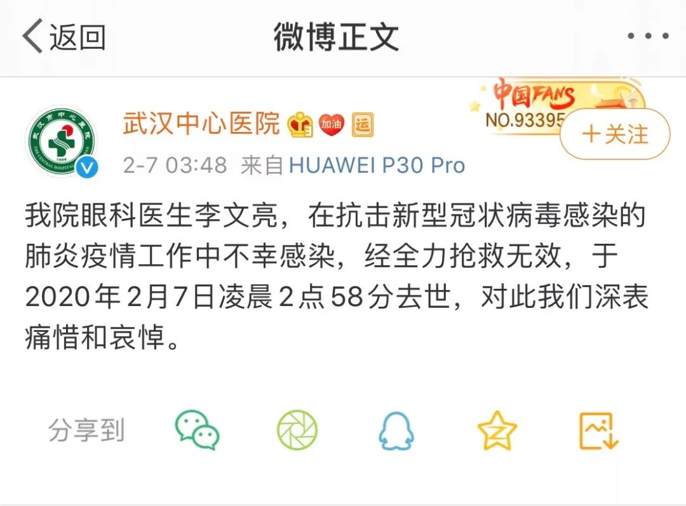
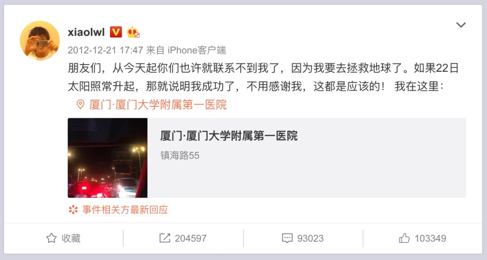

武汉新增病例0增长的12天，发生了什么？
原文链接 备份链接 27.01.2020本文字数：3361，阅读时长大约6分钟 导读：自1月6日开始到17日，武汉新冠肺炎12天未报告一例新增病例，并在较长时间内一直强调“未发现明确的人传人的证据”，在相当程度上导致社会各界缺乏警惕、疏 …


世上没有从天而降的英雄，只有挺身而出的凡人。


李文亮医生走了。
2020年2月7日凌晨3点48分，武汉市中心医院微博发布消息：我院眼科医生李文亮，在抗击新型冠状病毒感染的肺炎疫情工作中不幸感染，经全力抢救无效，于2020年2月7日凌晨2点58分去世，对此我们深表痛惜和哀悼。

几个小时前，2月6日晚22点左右，李文亮病逝的消息，已经在很多人的微信群、朋友圈传开。
李文亮是最早预警此次新冠肺炎疫情的人之一。2019年12月30日傍晚，他在一个同学群中发出相关信息。几天后的2020年1月3日，他因“在互联网发布不实言论”被辖区派出所训诫。之后回到工作岗位。
1月8日，他在接诊中不幸感染，1月10日开始咳嗽，16号之后呼吸困难加重，完全不能下床，2月1日确诊为新冠肺炎。2月5日，病情出现恶化。
据透露，李文亮是在2月6日的晚上19点多被送进了抢救室。21点18分，使用了肾上腺素针，21点30分左右停止心跳，用了ECOM（人工膜肺）进行抢救，23点58分再次使用肾上腺素针。
2月7日0点38分，武汉中心医院微博发布消息：“在抗击新型冠状病毒感染的肺炎疫情中，我院眼科医生李文亮不幸感染，目前病危，正在全力抢救中”。
这一消息下方，排第一的留言是：不睡了！在线等一个奇迹！

此前李文亮接受媒体采访时，还通过文字告诉记者，“康复后我想赶快回到一线工作，继续为患者看病。”
然而，没有等到奇迹，只等到了这个令人伤心的消息。
预警：健康的社会不该只有一种声音
李文亮是最早警示新冠肺炎疫情的人之一。
李文亮出生于1986年，籍贯辽宁省锦州市北镇市。2004年考上武汉大学临床医学七年制专业，毕业后在厦门短暂工作3年，之后重返武汉，在武汉市中心医院工作。
2019年12月30日，李文亮在医院看到了一份病人检测报告，报告显示该病人检出SARS冠状病毒高置信度阳性指标。出于提醒同学注意防护的角度（其同学多为临床医生），他在大学同学微信群里发布了一段“华南海鲜水果市场确诊7例SARS”的文字。一个小时后，他在群里更正道，“最新消息是，冠状病毒感染确定了，正在进行病毒分型”，并提醒大家不要外传，让家人亲人注意防范。
同一天，武汉市卫健委医政医管处发布《关于做好不明原因肺炎救治工作的紧急通知》。通知称，武汉市部分医疗机构陆续出现不明原因肺炎病人。通知要求各医疗机构要及时追踪统计救治情况，并按要求及时上报。该通知特别强调“未经授权任何单位，个人不得擅自对外发布救治信息”。
12月31日，武汉卫健委发布“不明原因肺炎”消息，国家卫健委相关人员也抵达武汉调查。
2020年1月1日，武汉市公安局微博发布消息称，“近期，武汉市部分医疗机构发现接诊了多例肺炎病例，武汉市卫健委就此发布了情况通报。但一些网民在不经核实的情况下，在网络上发布、转发不实信息，造成不良社会影响。当地公安机关经调查核实，已传唤8名违法人员，并依法进行了处理。”
1月3日，李文亮收到了辖区派出所发出的训诫书，训诫理由为“在互联网上发表不属实的言论”。据他事后表示，当时只想着不被拘留就已经算好了，所以直接签了字。
此后，李文亮的工作并未受到影响，仍然在医院工作。1月8日，他在医院接诊了一位82岁的女性患者，就诊疾病为急性闭角型青光眼。因为病人当时没有发热症状，他并没有采取防护措施。第二天，该病人发烧，CT结果显示为“双肺磨玻璃样病变”，但因为没有核酸试剂盒，并未得到确认。
1月10日中午，李文亮开始咳嗽，并未引起注意。
1月11日，李文亮开始高烧，最高烧到38.6度。当天，他做了CT检查，结果同样显示为“双肺多发感染，磨玻璃样病变”。出于医生的职业敏感，他当天就实施了自我隔离，住到了外面的酒店。
同一天，武汉市卫健委发布关于不明原因的病毒性肺炎情况通报，表示目前未发现医务人员感染，未发现明确的人传人证据。
1月12号下午，李文亮被转入医院病房。当天，他的父母也出现了发热、呕吐的症状，并检测出肺部磨玻璃样病变，并于3天后入院治疗。
1月24号，李文亮被转到呼吸内科重症监护室，采用抗生素、激素、抗病毒类药物和高流量吸氧治疗，并于当天做了第一次核酸检测，结果不明。此后，他又做了第二次核酸检测，结果为阴性，但出于稳妥起见，医院一直按照新型冠状病毒的临床指南为他进行治疗。
1月31日，李文亮做了第三次核酸检测，次日的结果显示为阳性，他被确诊新型冠状病毒感染的肺炎。当天，他在个人社交平台上表示，“尘埃落定，终于确诊了。”当时，他插着氧气管不能说话，只能通过手机和外界联系。

1月28日，最高人民法院刊文评论“武汉市公安机关处罚的8名发布‘华南水果海鲜市场确诊7例SARS’的案件”，认为：尽管新型肺炎并不是SARS，但是信息发布者发布的内容，并非完全捏造。如果社会公众当时听信了这个“谣言”，并且基于对SARS的恐慌而采取了佩戴口罩、严格消毒、避免再去野生动物市场等措施，这对我们今天更好地防控新型肺炎，可能是一件幸事。
中国疾控中心首席科学家，国家卫健委高级专家组成员曾光在接受采访时表示，“这8个人是可敬的，他们是忧国忧民，有一定见解的。作为公共卫生专家，希望同他们对话，希望从他们身上学点东西。”
而李文亮在接受采访时说，“看到最高法院的文章后，我心里放松了许多，不太担心医院的处理了。我觉得一个健康的社会不该只有一种声音”。
预言：从今天起你们也许就联系不到我了
李文亮是一个热爱生活的普通人。
从他的微博可以看出，他喜欢肖战、毕导和虎扑，经常转发各种抽奖微博，有送手机、送车厘子、送免费旅游，他宠子、宠妻，在微博上给怀二胎的妻子买叶酸，看到别人拍秋天的长城，说有时间要带小李（爱人）去体验一下。
他喜欢美食，一碗9块钱的刀削面，在他笔下是：面条柔韧、红油清亮、牛肉紧实、泡菜酸爽……他会一次叫两家店的鸡排，还做了个比较……
有时候也很文艺，分享了《滚石唱片突然发布不朽金曲<明天会更好>高清MV……》
更多时候，他关注电子产品，早年经常给自己的手机跑分，会付钱去围观罗永浩对如何评价iPhone11的评价。
罗永浩发布新手机，他也要发个微博：昨天晚上守在电脑前听了2个小时的相声，9:59准时去京东守着抢购，结果被老婆及时阻止，为此我们冷战了一个晚上，早上的吻别也取消了，男人没点私房钱就是不行！！！另外，32G什么时候有货呐？
对，他有时候也会自黑。
他的微博中，也有很多关于医生的内容。比如去年12月28日，在同学群发出预警前两天，他转了声援北京民航医院杨文医生的文章，标题是《地狱空荡，恶魔人间》。
有时候会记录一些工作中的小故事，例如：今天手术真你妹的多，7点半了，给最后一个女病人包扎。病人:这么晚了，你们还没吃饭吧？ 我:为病人服务最重要，吃饭算什么？ 病人:好吧…
微博呈现了一个平凡的李文亮，过着非常日常的生活。
2月7日凌晨1点41分，李文亮的同行，武汉协和医院的一位医生，协和医生Do先生分享了一张图片，上面写着：世上没有从天而降的英雄，只有挺身而出的凡人。

八年前的2012年12月21日，传说中的“世界末日”。这一天，李文亮发了微博调侃说：
朋友们，从今天起你们也许就联系不到我了，因为我要去拯救地球了。如果22日太阳照常升起，那就说明我成功了，不用感谢我，这都是应该的！

毛晓琼 王晨|撰稿
王吉陆|责编


我们尊重原创版权，未经允许请勿转载。
授权转载
郑琪 微信号: 1281949389
商务合作
上海：leslee 13916263824
北京：Jessie 13911125922
线索爆料、意见反馈，加入核心读者社群
请扫码联系健闻君

让朋友们看到你也在看
↓↓↓
原文链接 备份链接 27.01.2020本文字数：3361，阅读时长大约6分钟 导读：自1月6日开始到17日，武汉新冠肺炎12天未报告一例新增病例，并在较长时间内一直强调“未发现明确的人传人的证据”，在相当程度上导致社会各界缺乏警惕、疏 …
原文链接 备份链接 1月底，李文亮的名字才第一次被大众所知，此前他只是“被训诫的武汉医生”。 在此之前，这场疫病还被称为“不明原因肺炎”。身为临床医生，他在群里提醒同学注意防护，但自己不幸感染，并住进了重症监护室。 2月1日，他发出了最后 …
原文链接 备份链接 本报记者 张家振 武汉报道 “今天核酸检测结果阳性，尘埃落定，终于确诊了。”2月1日上午10时41分，疫情“吹哨人”李文亮对外界宣布了这一消息。李文亮是武汉市中心医院的一名眼科医生，因最早于2019年12月30日向外 …
原文链接 备份链接 武汉中心医院眼科医生李文亮（1986-2020）（资料图/图） 全文共*5612*字，阅读大约需要14分钟。 李文亮还活着吗？李文亮抢救过来了吗？这位武汉眼科医生的命运，在这个深夜牵动着很多人的心。直到凌 …
原文链接 备份链接 在接受媒体采访时，被问及康复后有什么计划，李文亮说：“恢复以后还是要上一线，疫情还在扩散，不想当逃兵！至于疫情以后的事，还没想太多。” 全文2071字，阅读约需4分钟 2月7日凌晨，武汉中心医院官方微博发布消息：我院 …